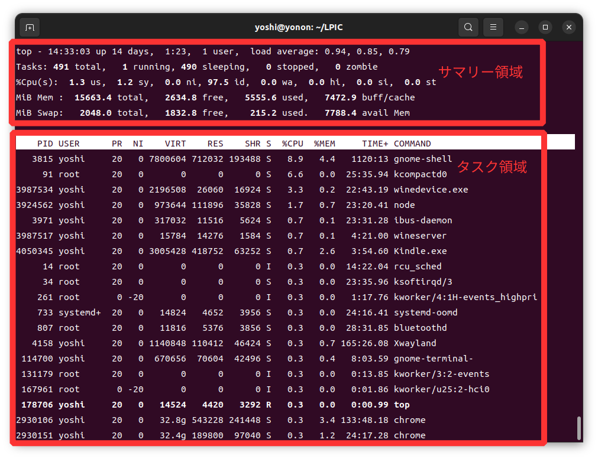
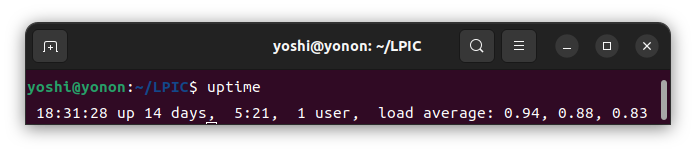

200.1 リソース使用量の計測とトラブルシューティング
vmstat
システムのメモリ、プロセス、割り込み、ページング、ブロックI/O、CPUの情報を表示します。
文法
vmstat [間隔(s) [回数]]
オプション
| オプション | 説明 |
|---|---|
| -d | ディスクの統計情報を表示する |
| -s | イベントカウンタとメモリの統計情報を表示する |
| -p | 指定したパーティションの統計情報を表示する |
| -a | メモリのアクティブ/インアクティブを表示する |
| -S | Sの後にkまたはK、mまたはMを付けると1000、1,024、1,000,000、1,048,576バイトに出力が変わります。 |
| -w | 大きなメモリサイズに対応するため、フィールド幅を拡大する |
実行例
$ vmstat 1 3
procs -----------memory---------- ---swap-- -----io---- -system-- ------cpu-----
r b swpd free buff cache si so bi bo in cs us sy id wa st
0 0 162464 1888624 972008 7572308 0 0 8 96 14 17 17 6 77 0 0
0 0 162464 1896428 972008 7564304 0 0 0 0 1742 3277 1 0 99 0 0
0 0 162464 1891780 972008 7563944 0 0 0 240 2015 4127 1 1 98 0 0
$ vmstat -d -w -SM
disk- -------------------reads------------------- -------------------writes------------------ ------IO-------
total merged sectors ms total merged sectors ms cur sec
nvme0n1 601772 123291 34476461 220478 9635078 9738776 444943858 18905783 0 8533
sda 6694 0 37194 56228 0 0 0 0 0 63
sdb 4839 36711 76258 86326 2 1 3 2 0 12
表示結果の内容
-
procs
- r (runnable: 実行可能) : 待ち状態となっている実行可能プロセス数
- b (block: ブロック) : 割り込みできないスリープ状態となっているプロセス数
-
memory
- swpd : 使用されているスワップの量
- free : 未使用のメモリの量
- buff : 使用されているバッファの量
- cache : 使用されているキャッシュの量
-
swap
- si (swap in) : スワップからメモリに読み込まれた1秒間の平均量
- so (swap out): メモリからスワップに書き出された1秒間の平均量
-
io
- bi (block in) : デバイスから読み込まれたブロックの1秒間の平均量
- bo (block out) : デバイスに書き出されたブロックの1秒間の平均量
-
system
- in (interrupt) : １秒あたり割り込み回数
- cs (context switch) : 1秒あたりのコンテキストスイッチの回数
-
cpu
- us (user) : ユーザ時間の割合
- sy (system) : カーネル時間の割合
- id (idle) : アイドル時間の割合
- wa (wait) : I/O待ち時間の割合
- st (stolen): 仮想マシンの与えた時間の割合
-
reads
- total : 正常に完了した読み込みの合計
- merged: グループ化された読み込み(I/O)
- sectors : 読み込みに成功したセクタ数
- ms : 読み込みにかかった時間
-
writes
- total : 正常に完了した書き込みの合計
- merged : グループ化された書き込み(I/O)
- sectors : 書き込みに成功したセクタ数
- ms : 書き込みにかかった時間
-
IO
- cur : 実行中のI/O
- s : I/Oに費やした時間
top
システムの全体的な使用率統計情報や、各プロセスのかつ状況を定期的に更新し、リアルタイムに表示する。
文法
$ top
オプション
| オプション | 説明 |
|---|---|
| -d 間隔 | 更新する間隔（デフォルト3秒） |
| -n 回数 | 表示を繰り返す回数 |
| -U ユーザー | 指定したユーザのプロセスを表示する |
| -p PID | 指定したPIDを表示する |
| -c | プログラム名とコマンドラインの表示を切り替える |
実行例
システムの全体的な使用率統計情報を表示するサマリー領域と、実行中のプロセスを、CPU使用率の高い順に、周期的にリスト表示するタスク領域があります。

表示結果の内容
サマリー領域
-
1行目 top -
- 現在時刻
- 稼働時間
- ログインユーザー数
- 平均負荷（1分、5分、15分）
-
2行目 tasks:
- タスクの総数
- 実行中あるいは実行可能なタスク数
- スリープしているタスク数
- ストップしているタスク数
- ゾンビタスク数
-
3行目 %Cpu(s):
- ユーザモードの時間
- システムモードの時間
- ナイス値が変更されたプロセスのユーザモードの時間
- アイドル時間
- I/O終了待ちの時間
- ハードウェア割り込みの処理時間
- ソフトウェア割り込みの処理時間
- ハーパーバイザの処理時間
-
4行目 MiB Mem:
- メモリの総量
- 未使用のメモリのサイズ
- 使用されているメモリのサイズ
- バッファやキャッシュに割り当て済みのメモリのサイズ
-
5行目 MiB Swap:
- スワップ領域の総量
- 未使用のスワップ領域のサイズ
- 使用されているスワップ領域のサイズ
- 物理メモリの空きサイズ
タスク領域
- PID : プロセスID
- USER : 実行ユーザ
- PR : 優先度(Priority)。低いほど優先される。
- NI : ナイス値(nice)。低いほど優先される。
- VIRT : 割り当て済みの仮想メモリ（KiB）。スワップ含む。
- RES : Resident Memory Size（KiB）。使用している物理メモリ。スワップ含まない。
- SHR : Shared Memory Size（KiB）。RESのうち、共有メモリとして使用されているメモリ。
- S : Process State Code。
- D : 割り込み不可スリープ
- I : アイドルカーネルスレッド
- R : 実行中もしくは実行可能
- S : 割り込み可能スリープ
- T : ジョブ制御シグナルで停止
- t : デバッガにより停止
- Z : ゾンビプロセス
- %CPU : そのプロセスが処理を行った時間の割合。
- %MEM : RES（実際の消費メモリ）の割合。
- TIME+ : プロセスが起動してから、CPUにより処理された掃除間。(10ms)
- COMMAND : 実行プロセス名。
uptime
システムの稼働時間や負荷平均(Load average)を表示します。
文法
$ uptime
実行例

表示結果の内容
- 現在時刻
- 稼働時間
- ログインユーザ数
- 負荷平均（1分、5分、15分）
sar
システムアクティビティの統計情報を収集、格納、表示する。指定したインターバル、回数で統計情報を収集し、表示する。インターバル、回数をを指定しなかった場合、あるいは-fオプションを指定した場合はデータファイルの内容を表示します。
文法
$ sar [オプション] <間隔(秒)> <回数>
オプション
| オプション | 説明 |
|---|---|
| -o [ファイル名] | 格納するデータファイル |
| -f [ファイル名] | 表示するデータファイル |
| -P {CPU番号|ALL} | 指定したCPU番号の統計情報を表示する。 |
| -n {キーワード|ALL} | 指定したキーワードの統計情報を表示する。キーワード： DEV(ネットワークデバイス)、SOCK(UNIXソケット)、IP、TCP、UDP |
| -r | メモリの使用状況を表示する |
| -d | ブロックデバイスの統計情報を表示する |
| -b | I/Oと転送レートの統計情報を表示する |
| -A | すべての統計情報を表示する |
実行例1
1秒間隔で3回統計情報を取得する
$ sar 1 3
Linux 5.15.0-56-generic (yonon) 2022年12月23日 _x86_64_ (12 CPU)
12時50分29秒 CPU %user %nice %system %iowait %steal %idle
12時50分30秒 all 1.74 0.00 1.00 0.00 0.00 97.26
12時50分31秒 all 8.60 0.00 2.17 0.00 0.00 89.23
12時50分32秒 all 2.01 0.00 0.92 0.17 0.00 96.91
平均値: all 4.11 0.00 1.36 0.06 0.00 94.47
表示結果の内容
| オプション | 説明 |
|---|---|
| %user | CPUがユーザモードで実行していた時間の割合。 |
| %nice | nice値が変更されたプロセスをCPUがユーザーモードで実行するのに費やした時間の割合。 |
| %system | CPUがカーネルモードで実行していた時間の割合。ハードウェア割り込みと ソフトウェア割り込みで使われた時間を含む。 |
| %iowait | CPUがディスクI/O待ちをしていた時間の割合。 |
| %steal | ハイパーバイザがゲストOSにCPUを割り当てるのに費やした時間の割合。ゲストOSがCPUを要求したが、別のゲストOSがCPUを使用していて競合が起こったときにこの値が上昇する。 |
| %idle | CPUがアイドル状態であった時間の割合。 |
実行例2
1秒間隔で3回CPUの統計情報を、ALLオプションの指定ですべてのフィールドを取得する
$ sar -u ALL 1 3
Linux 5.15.0-56-generic (yonon) 2022年12月23日 _x86_64_ (12 CPU)
16時48分39秒 CPU %usr %nice %sys %iowait %steal %irq %soft %guest %gnice %idle
16時48分40秒 all 0.33 0.00 0.25 0.00 0.00 0.00 0.00 0.00 0.00 99.41
16時48分41秒 all 0.92 0.00 1.00 0.00 0.00 0.00 0.00 0.00 0.00 98.08
16時48分42秒 all 1.25 0.00 1.00 0.00 0.00 0.00 0.00 0.00 0.00 97.75
平均値: all 0.83 0.00 0.75 0.00 0.00 0.00 0.00 0.00 0.00 98.41
表示結果の内容
| オプション | 説明 |
|---|---|
| %usr | CPUがユーザモードで動作していた時間の割合。 このフィールドは仮想プロセッサで使われる時間を「含まない」。 |
| %nice | nice値が変更されたプロセスをCPUがユーザーモードで動作していた時間の割合。 |
| %sys | CPUがカーネルモードで動作していた時間の割合。ハードウェア割り込みと ソフトウェア割り込みで使われた時間を「含まない」。 |
| %iowait | CPUがディスクI/O待ちをしていた時間の割合。 |
| %steal | ハイパーバイザがゲストOSにCPUを割り当てるのに費やした時間の割合。ゲストOSがCPUを要求したが、別のゲストOSがCPUを使用していて競合が起こったときにこの値が上昇する。 |
| %irq | CPUがハードウェア割り込みへのサービスに使った時間の割合。 |
| %soft | CPUがソフトウェア割り込みへのサービスに使った時間の割合。 |
| %guest | CPUが仮想プロセッサを実行するのに使った時間の割合。 |
| %gnice | CPUがnice値が変更されたゲストを実行するのに使った時間の割合。 |
| %idle | CPUがアイドル状態であった時間の割合。 |
実行例3
1秒間隔で3回メモリの統計情報を、ALLオプションの指定ですべてのフィールドを取得する。
$ sar -r ALL 1 3
Linux 5.15.0-56-generic (yonon) 2022年12月23日 _x86_64_ (12 CPU)
16時12分11秒 kbmemfree kbavail kbmemused %memused kbbuffers kbcached kbcommit %commit kbactive kbinact kbdirty kbanonpg kbslab kbkstack kbpgtbl kbvmused
16時12分12秒 1649300 5699816 7075780 44.12 906964 5718328 30462960 167.97 4236168 8229916 140 6569484 688940 34416 113476 206124
16時12分13秒 1650832 5701336 7074260 44.11 906964 5718316 30462960 167.97 4235992 8226604 172 6569516 688940 34416 113476 206124
16時12分14秒 1650372 5700876 7074720 44.11 906964 5718316 30462964 167.97 4235992 8227180 52 6570096 688940 34416 113476 206108
平均値: 1650168 5700676 7074920 44.11 906964 5718320 30462961 167.97 4236051 8227900 121 6569699 688940 34416 113476 206119
表示結果の内容
| オプション | 説明 |
|---|---|
| kbmemfree | 空きメモリの容量（KB） |
| kbavail | スワップなしで新しいアプリケーションを開始するのに 利用可能なメモリ量の推定値（KB） |
| kbmemused | メモリの使用量（KB）（マシンのメモリサイズ - kbmemfree - kbbuffers - kbcached - kbslab） |
| %memused | メモリ使用量の割合（％） |
| kbbuffers | カーネルのバッファとして使用されているメモリの容量（KB） |
| kbcached | カーネルキャッシュとして使用されているメモリの容量（KB） |
| kbcommit | システムの動作に必要な事前に確保されているメモリの量 (RAM + swap) |
| %commit | システムの動作に必要な事前に確保されているメモリの総メモリ量に対する割合 (RAM + swap) |
| kbactive | アクティブなメモリの容量 (KB)。※直近で使用されたメモリ、必要のない限り再利用 (開放) されないメモリ。 |
| kbinact | アクティブでないメモリの容量 (KB)。※直近で使用されていないメモリ、必要に応じて再利用 (開放) するメモリ。 |
| kbdirty | ディスクに書き戻されるのを待機しているメモリの容量 (KB)。 |
| kbanonpg | ユーザ空間ページテーブルへマップされるファイルに紐付かない (non-file backed) ページ数。 |
| kbslab | カーネルがキャッシュデータ構造、またはカーネル自身で 使っているメモリ量（KB） |
| kbkstack | カーネルスタック空間として使っているメモリ量（KB） |
| kbpgtbl | ページテーブルの最下層として割り当てられるメモリ量（KB） |
| kbvmused | 仮想アドレス空間として使っているメモリ量（KB） |
実行例4
1秒間隔で3回ブロックデバイスの統計情報を取得する。
$ sar -d 1 3
Linux 5.15.0-56-generic (yonon) 2022年12月23日 _x86_64_ (12 CPU)
14時20分06秒 DEV tps rkB/s wkB/s dkB/s areq-sz aqu-sz await %util
14時20分07秒 nvme0n1 40.00 0.00 160.00 0.00 4.00 0.09 2.33 0.80
14時20分07秒 sda 0.00 0.00 0.00 0.00 0.00 0.00 0.00 0.00
14時20分07秒 sdb 0.00 0.00 0.00 0.00 0.00 0.00 0.00 0.00
14時20分07秒 DEV tps rkB/s wkB/s dkB/s areq-sz aqu-sz await %util
14時20分08秒 nvme0n1 0.00 0.00 0.00 0.00 0.00 0.00 0.00 0.00
14時20分08秒 sda 0.00 0.00 0.00 0.00 0.00 0.00 0.00 0.00
14時20分08秒 sdb 0.00 0.00 0.00 0.00 0.00 0.00 0.00 0.00
14時20分08秒 DEV tps rkB/s wkB/s dkB/s areq-sz aqu-sz await %util
14時20分09秒 nvme0n1 2.00 0.00 36.00 0.00 18.00 0.01 5.00 1.20
14時20分09秒 sda 0.00 0.00 0.00 0.00 0.00 0.00 0.00 0.00
14時20分09秒 sdb 0.00 0.00 0.00 0.00 0.00 0.00 0.00 0.00
平均値: nvme0n1 14.00 0.00 65.33 0.00 4.67 0.04 2.45 0.67
平均値: sda 0.00 0.00 0.00 0.00 0.00 0.00 0.00 0.00
平均値: sdb 0.00 0.00 0.00 0.00 0.00 0.00 0.00 0.00
表示結果の内容
| オプション | 説明 |
|---|---|
| tps | 1秒あたりに物理デバイスに発行される転送回数 |
| rKB/s | 1秒あたりにデバイスから読み込んだデータのサイズ（KB） |
| wKB/s | 1秒あたりにデバイスから書き込んだデータのサイズ（KB） |
| dKB/s | 1秒あたりにデバイスから破棄したデータのサイズ（KB） |
| areq-sz | デバイスに発行したI/Oリクエストの平均サイズ（KB） |
| aqu-sz | デバイスに発行したリクエスト平均のキューの長さ |
| await | デバイスに発行した I/O リクエストが処理されるまでの平均時間 (ミリ秒)。 この時間には、リクエストがキューに入っている時間と、処理される時間が含まれる。 |
| %util | デバイスに I/O リクエストが発行される経過時間の割合 (デバイスのバンド幅使用率)。 リクエストに対してデバイスがシリアルにサービスする場合、 この値が 100% に近いとデバイスの飽和が起こっている。 RAID アレイや最近の SSD のように、リクエストに対してデバイスがパラレルにサービスする場合、 この値は性能限界を反映しない。 |
実行例5
1秒間隔で3回I/Oと転送率の統計情報を取得する。
$ sar -b 1 3
Linux 5.15.0-56-generic (yonon) 2022年12月23日 _x86_64_ (12 CPU)
16時34分33秒 tps rtps wtps dtps bread/s bwrtn/s bdscd/s
16時34分34秒 7.00 0.00 7.00 0.00 0.00 56.00 0.00
16時34分35秒 0.00 0.00 0.00 0.00 0.00 0.00 0.00
16時34分36秒 7.00 0.00 7.00 0.00 0.00 56.00 0.00
平均値: 4.67 0.00 4.67 0.00 0.00 37.33 0.00
表示結果の内容
| オプション | 説明 |
|---|---|
| tps | 1 秒あたりに物理デバイスに発行される転送回数。 |
| rtps | 1 秒あたりの物理デバイスからの読み込みリクエスト数。 |
| wtps | 1 秒あたりの物理デバイスへの書き込みリクエスト数。 |
| dtps | 1 秒あたりの物理デバイスへの破棄リクエスト数。 |
| bread/s | 1 秒あたりのデバイスからの読み込みデータ量 (ブロック数) |
| bwrtn/s | 1 秒あたりのデバイスへの書き込みデータ量 (ブロック数) |
| bdscd/s | 1 秒あたりのデバイスへの破棄データ量 (ブロック数) |
実行例6
1秒間隔で3回ネットワークデバイスの統計情報を取得する。
$ sar -n DEV 1 3
Linux 5.15.0-56-generic (yonon) 2022年12月23日 _x86_64_ (12 CPU)
17時11分40秒 IFACE rxpck/s txpck/s rxkB/s txkB/s rxcmp/s txcmp/s rxmcst/s %ifutil
17時11分41秒 lo 2.00 2.00 0.12 0.12 0.00 0.00 0.00 0.00
17時11分41秒 enp7s0 0.00 0.00 0.00 0.00 0.00 0.00 0.00 0.00
17時11分41秒 eno1 0.00 0.00 0.00 0.00 0.00 0.00 0.00 0.00
17時11分41秒 wlp6s0 1.00 1.00 0.04 0.07 0.00 0.00 0.00 0.00
17時11分41秒 IFACE rxpck/s txpck/s rxkB/s txkB/s rxcmp/s txcmp/s rxmcst/s %ifutil
17時11分42秒 lo 0.00 0.00 0.00 0.00 0.00 0.00 0.00 0.00
17時11分42秒 enp7s0 0.00 0.00 0.00 0.00 0.00 0.00 0.00 0.00
17時11分42秒 eno1 0.00 0.00 0.00 0.00 0.00 0.00 0.00 0.00
17時11分42秒 wlp6s0 1.00 1.00 0.06 0.09 0.00 0.00 0.00 0.00
17時11分42秒 IFACE rxpck/s txpck/s rxkB/s txkB/s rxcmp/s txcmp/s rxmcst/s %ifutil
17時11分43秒 lo 2.00 2.00 0.12 0.12 0.00 0.00 0.00 0.00
17時11分43秒 enp7s0 0.00 0.00 0.00 0.00 0.00 0.00 0.00 0.00
17時11分43秒 eno1 0.00 0.00 0.00 0.00 0.00 0.00 0.00 0.00
17時11分43秒 wlp6s0 0.00 0.00 0.00 0.00 0.00 0.00 0.00 0.00
平均値: IFACE rxpck/s txpck/s rxkB/s txkB/s rxcmp/s txcmp/s rxmcst/s %ifutil
平均値: lo 1.33 1.33 0.08 0.08 0.00 0.00 0.00 0.00
平均値: enp7s0 0.00 0.00 0.00 0.00 0.00 0.00 0.00 0.00
平均値: eno1 0.00 0.00 0.00 0.00 0.00 0.00 0.00 0.00
平均値: wlp6s0 0.67 0.67 0.04 0.05 0.00 0.00 0.00 0.00
表示結果の内容
| オプション | 説明 |
|---|---|
| IFACE | 統計をレポートするネットワークインタフェースの名前。 |
| rxpck/s | 1 秒あたりの受信パケット数。 |
| txpck/s | 1 秒あたりの送信パケット数。 |
| rxKB/s | 1 秒あたりの受信キロバイト数。 |
| txKB/s | 1 秒あたりの送信キロバイト数。 |
| rxcmp/s | 1 秒あたりの受信圧縮パケット数 (cslip など)。 |
| txcmp/s | 1 秒あたりの送信圧縮パケット数。 |
| rxmcst/s | 1 秒あたりの受信マルチキャストパケット数。 |
| %ifutil | ネットワークインタフェースの利用率。 半二重インタフェースの場合の利用率は、rxkB/s と txkB/s の合計が インタフェーススピードに占める割合を計算する。 全二重インタフェースの場合は、rxkB/s と txkB/s のうちの大きい方が占める割合を計算する。 |
実行例7
1秒間隔で3回ネットワークデバイスwlp6s0のエラーの統計情報を取得する。
$ sar -n EDEV --iface=wlp6s0 1 3
Linux 5.15.0-56-generic (yonon) 2022年12月23日 _x86_64_ (12 CPU)
17時34分28秒 IFACE rxerr/s txerr/s coll/s rxdrop/s txdrop/s txcarr/s rxfram/s rxfifo/s txfifo/s
17時34分29秒 wlp6s0 0.00 0.00 0.00 0.00 0.00 0.00 0.00 0.00 0.00
17時34分29秒 IFACE rxerr/s txerr/s coll/s rxdrop/s txdrop/s txcarr/s rxfram/s rxfifo/s txfifo/s
17時34分30秒 wlp6s0 0.00 0.00 0.00 0.00 0.00 0.00 0.00 0.00 0.00
17時34分30秒 IFACE rxerr/s txerr/s coll/s rxdrop/s txdrop/s txcarr/s rxfram/s rxfifo/s txfifo/s
17時34分31秒 wlp6s0 0.00 0.00 0.00 0.00 0.00 0.00 0.00 0.00 0.00
平均値: IFACE rxerr/s txerr/s coll/s rxdrop/s txdrop/s txcarr/s rxfram/s rxfifo/s txfifo/s
平均値: wlp6s0 0.00 0.00 0.00 0.00 0.00 0.00 0.00 0.00 0.00
表示結果の内容
| オプション | 説明 |
|---|---|
| IFACE | 統計をレポートするネットワークインタフェースの名前。 |
| rxerr/s | 1 秒あたりの受信不良パケット数。 |
| txerr/s | 1 秒あたりの送信エラーが起きたパケット数。 |
| coll/s | 1 秒あたりの送信衝突 (collision) が起きたパケット数。 |
| rxdrop/s | 1 秒あたりのドロップされた受信パケット数。Linux のバッファに空きがない場合に起こる。 |
| txdrop/s | 1 秒あたりのドロップされた送信パケット数。Linux のバッファに空きがない場合に起こる。 |
| txcarr/s | 1 秒あたりのキャリアエラーが起きた送信パケット数。 |
| rxfram/s | 1 秒あたりのフレームアライメントエラーが起きた受信パケット数。 |
| rxfifo/s | 1 秒あたりの FIFO オーバーランエラーが起きた受信パケット数。 |
| txfifo/s | 1 秒あたりの FIFO オーバーランエラーが起きた送信パケット数。 |
iptraf
IPネットワークモニタリングツールです。TCP/UDPなどのIPパケットのモニター、およびネットワークI/Fの統計情報などを表示します。
pstree
現在動作しているプロセスをツリー形式で表示する。
ps
現在動作しているプロセス一覧を表示する。
iotop
I/Oの統計情報を表示する。